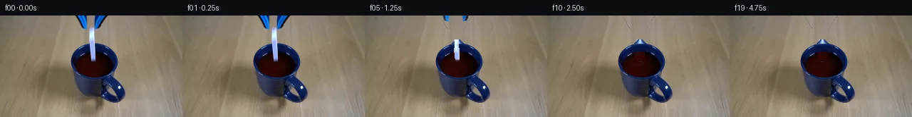

![首帧]()

Round 00
2026-11-06T00:10:55.384045+00:00像素候选变化代码 +321/−0inspection 更新
pixels 2c2d35ecc9c588f6 · code b9d2c8d652f83f83
查看本轮 generate.py 真实 diff
--- previous/generate.py
+++ current/generate.py
@@ -0,0 +1,321 @@
+"""PixelWorld vision-input generation, case_0047.
+
+Scene: blue-black tweezer grabber drops a white ceramic domino into a blue
+mug of dark liquid on a wooden table. All pixels are produced by local numpy
+operations: background inpainting from frame-0 statistics, sprite extraction
+with soft alpha, sub-pixel transforms, analytic splash/ripple modulation.
+Frame 0 and frame 1 are the verbatim first frame; later frames are composited
+on a reconstructed clean plate. See METHOD.md for details.
+"""
+from pathlib import Path
+import numpy as np
+from PIL import Image, ImageDraw
+
+import artifact_io
+
+CASE = Path(__file__).parent
+rng = np.random.default_rng(47)
+
+# ---------------------------------------------------------------- load input
+f0 = np.array(Image.open(CASE / "first_frame.png").convert("RGB"))
+H, W, _ = f0.shape
+assert (H, W) == (144, 256)
+F = f0.astype(np.float32)
+R, G, B = F[..., 0], F[..., 1], F[..., 2]
+
+
+def wood_mask(r, g, b):
+ return ((r >= 105) & (r <= 187) & (r - g >= 2) & (r - g <= 32)
+ & (g - b >= 5) & (g - b <= 36))
+
+
+Wmask = wood_mask(R, G, B)
+
+# --------------------------------------------------------- table colour model
+# vertical lighting curve from clearly clean table columns on both sides
+clean_cols = np.r_[0:96, 176:256]
+row_curve = np.zeros((H, 3), np.float32)
+for y in range(H):
+ sel = Wmask[y, clean_cols]
+ if sel.any():
+ row_curve[y] = np.median(F[y, clean_cols][sel], axis=0)
+# per-column offset measured on clean rows 24..32
+off = np.zeros((W, 3), np.float32)
+have = np.zeros(W, bool)
+for x in range(W):
+ sel = Wmask[24:33, x]
+ if sel.any():
+ off[x] = np.median(F[24:33, x][sel] - row_curve[24:33][sel], axis=0)
+ have[x] = True
+known = np.flatnonzero(have)
+for x in np.flatnonzero(~have):
+ j = known[np.argmin(np.abs(known - x))]
+ off[x] = off[j]
+
+def table_at(ys, xs):
+ ys = np.asarray(ys); xs = np.asarray(xs)
+ return row_curve[ys] + off[xs]
+
+# ------------------------------------------------------------- clean plate
+plate = F.copy()
+
+# 1) table under/around prongs and the upper part of the domino (y <= 33)
+yy, xx = np.mgrid[0:34, 103:151]
+fill = ~Wmask[0:34, 103:151]
+plate[0:34, 103:151] = np.where(
+ fill[..., None], table_at(yy, xx), plate[0:34, 103:151])
+
+# 2) back-rim highlight arc (y 34..39) hidden behind the strip
+def smoothstep(e0, e1, x):
+ t = np.clip((x - e0) / (e1 - e0), 0.0, 1.0)
+ return t * t * (3 - 2 * t)
+
+arc_hw = {34: 3.2, 35: 3.9, 36: 4.7, 37: 5.7, 38: 6.9, 39: 8.3}
+arc_crest = {34: (201, 229, 255), 35: (198, 227, 255), 36: (194, 223, 254),
+ 37: (189, 218, 252), 38: (184, 212, 250), 39: (178, 206, 247)}
+for y in range(34, 40):
+ hw = arc_hw[y]
+ base = np.array([8.0 + 0.6 * (y - 34), 39.0 + (y - 34),
+ 100.0 + 1.2 * (y - 34)], np.float32)
+ for x in range(122, 139):
+ d = abs(x - 130)
+ a = 1.0 - smoothstep(hw - 0.4, hw + 1.0, d)
+ if a <= 0:
+ continue
+ g = np.exp(-(d / (hw * 0.55)) ** 2)
+ col = base * (1 - g) + np.array(arc_crest[y], np.float32) * g
+ plate[y, x] = plate[y, x] * (1 - a) + col * a
… diff truncated; 234 more lines …